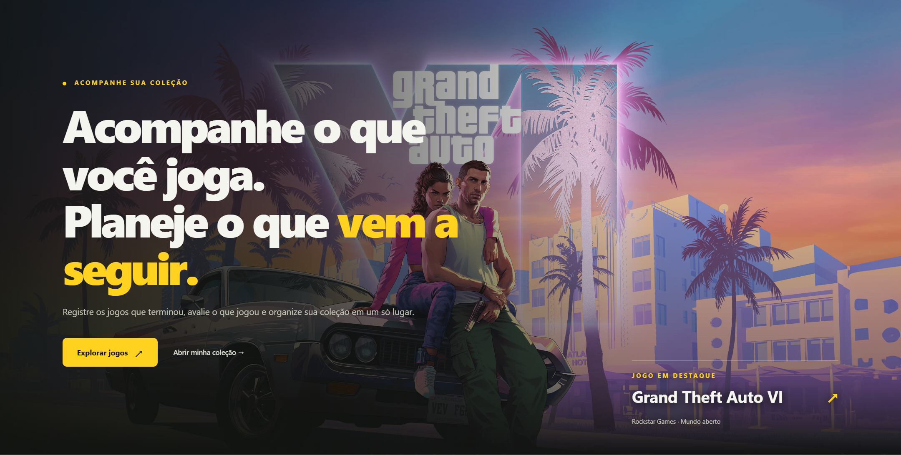

GAMES + CÓDIGO
Eu criei
o BackLog.
Um catálogo para organizar jogos, escrever reviews e descobrir o que jogar depois.
BACKLOG / PRÉVIA DO PROJETO



Conheça o projeto →
Um catálogo para organizar jogos, escrever reviews e descobrir o que jogar depois.
